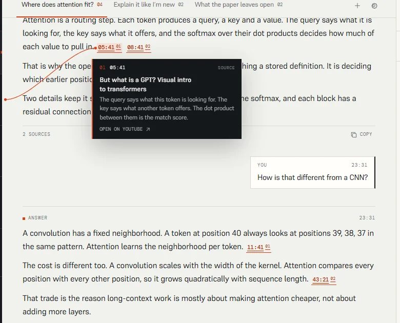
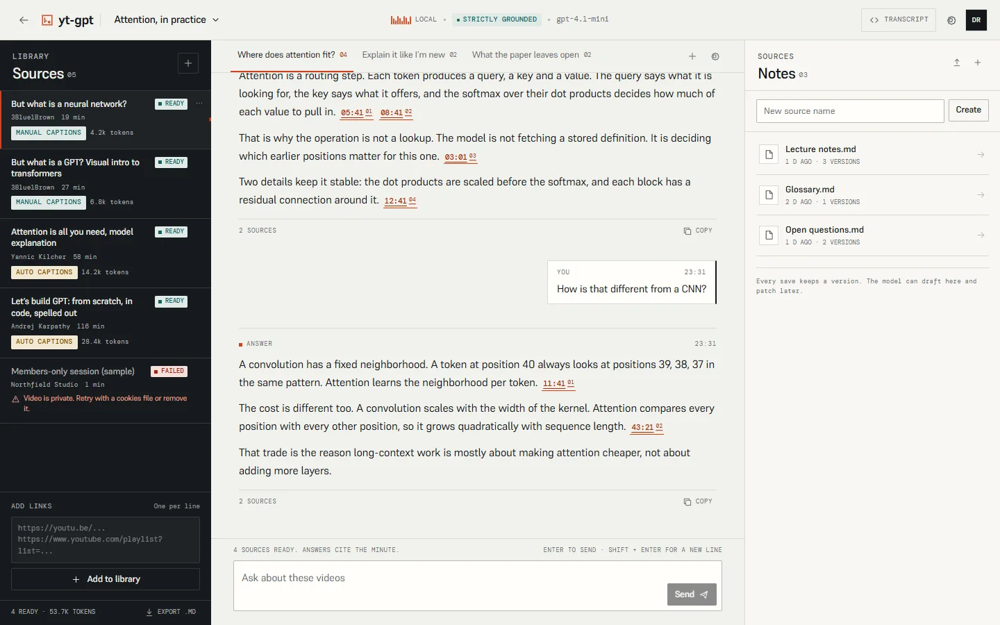
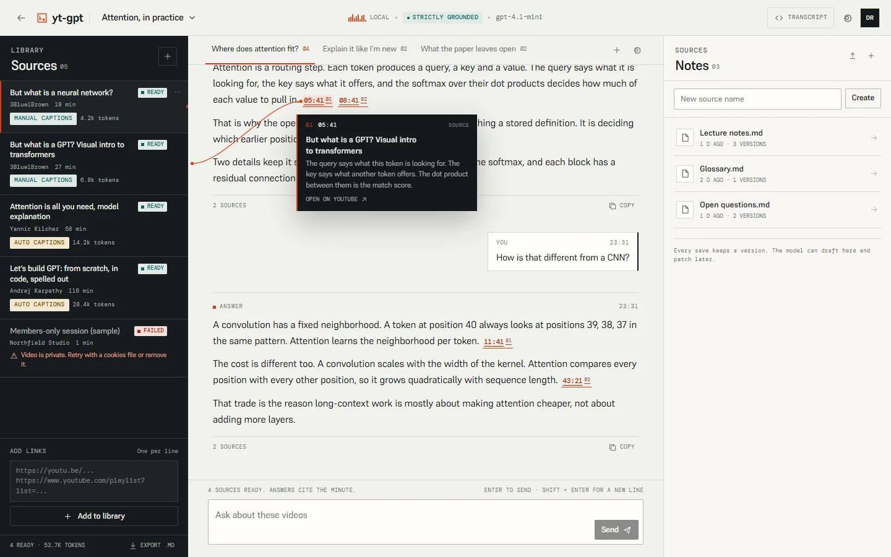
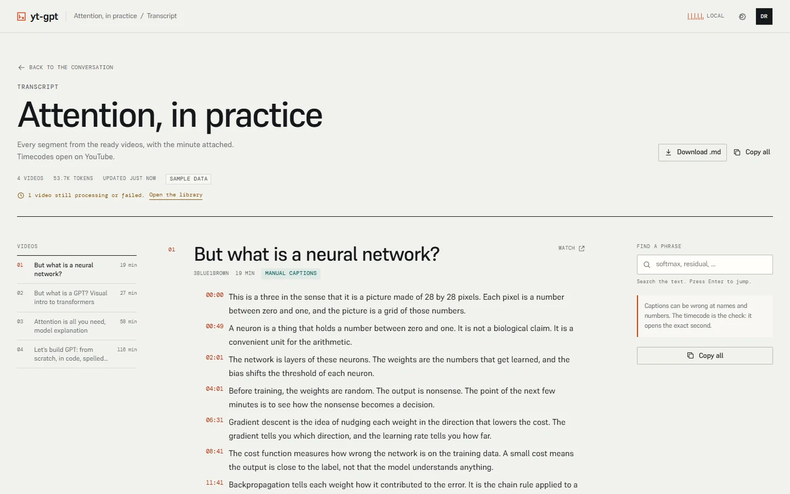
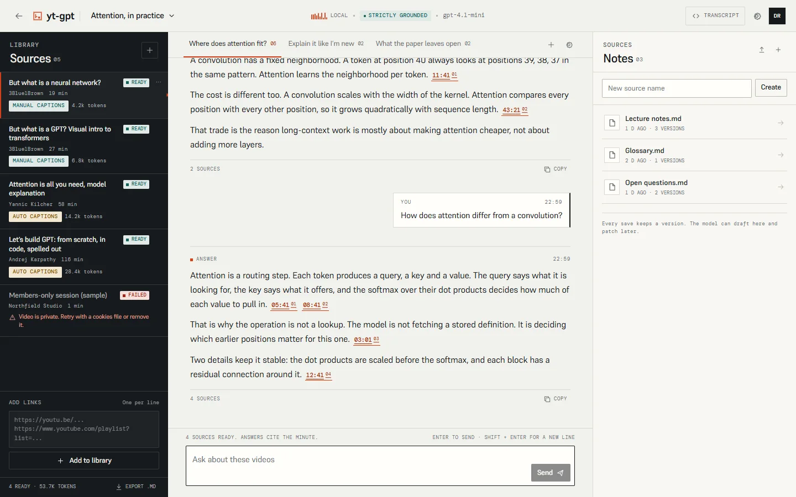
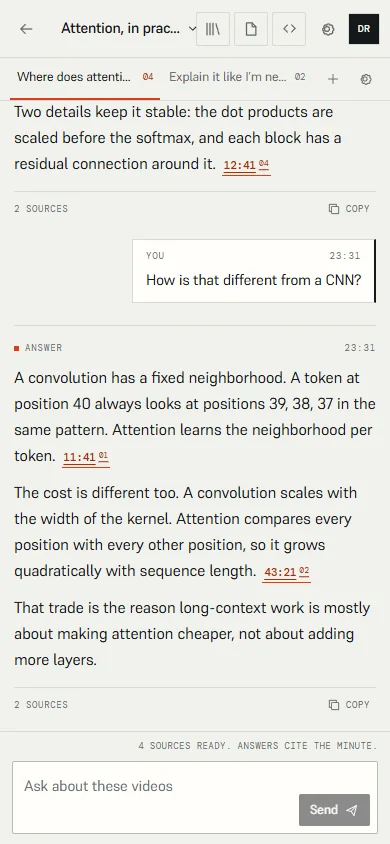

Attention is a routing step.
Each token asks a question, offers a key, and carries a value. The answer is not a lookup. It is a weighted mix of the earlier positions that matter for this one.
But what is a neural network? / manual captions
Paste YouTube links. yt-gpt builds clean, searchable transcripts, then answers with citations you can play. Captions first. Your model. Your files.

01 / THE MINUTE05:41
The transcript is the index. The timestamp is the proof. Scroll through three moments from the sample workspace.
Each token asks a question, offers a key, and carries a value. The answer is not a lookup. It is a weighted mix of the earlier positions that matter for this one.
But what is a neural network? / manual captions
The dot products are scaled before the softmax. Each block also keeps a residual connection around it. Without those choices, deep stacks become difficult to train.
But what is a neural network? / manual captions
A convolution has a fixed neighborhood. Attention compares every position with every other position, so it grows quadratically with sequence length. Long context work is mostly about making attention cheaper.
Attention is all you need, model explanation / auto captions
02 / THE PIPELINELINKS IN
No database. No transcription bill unless a video has no captions. One bad link never blocks the batch.

Videos and playlists, one per line. The batch moves link by link, with a clear status for each one.
Manual or auto captions are fetched and cleaned. Whisper runs only when a video has none.
Chunks are ranked per question. Full context is used only when it fits the model's window.
Every claim points to a video and a timestamp. Strict mode verifies the cited text before it ships.
03 / THE EVIDENCE05:41
Strict mode requires timestamped citations and checks them against the transcript. If the library does not cover it, the answer says so.




04 / THE RULESSESSION 03
Strict mode is enforced by required citations, a verification pass, and refusal when retrieval finds nothing. The interface says “strictly grounded,” not “guaranteed.”
Interpretive mode is a different contract. The model can reason, connect ideas, and bring outside knowledge, and the answer is labelled as such.
TRY THE CITATION
The query says what this token is looking for. The key says what another token offers.
OPEN ON YOUTUBE ↗05 / THE LOCAL PART127.0.0.1
The server binds to 127.0.0.1. Workspaces are plain folders. API keys stay in the OS keyring where available. No telemetry by default.
~/.yt-gpt/users/you/workspaces/attention/
├── transcripts.md
├── videos/
│ └── but-what-is-a-neural-network/
│ ├── meta.json
│ ├── segments.jsonl
│ ├── clean.txt
│ └── chunks.jsonl
├── sessions/
└── sources/Manual or auto captions are cleaned and reused. Whisper runs only when none exist.
Any OpenAI-compatible endpoint works, including Ollama and local models.
Retrieval sends the relevant chunks, not the whole library. Visuals stay off until asked.
06 / THE SETUP127.0.0.1
Install the core package, start the local server, and open the browser. Add Whisper or local embeddings only if you need them.
Read the full setupStatus: in design. The package is not released yet. The commands describe the intended experience.
$ pip install yt-gpt
$ yt-gpt serve
→ http://127.0.0.1:8765